Not ready for unattended daily use. The coordinator responds, but the first test task failed before its first turn and the second never started. Automatic merges remain off; no test PR was opened.
| Brief item | Status | What is established |
|---|---|---|
| Part 1: measure cache | Partly done | Receipts, settings and displays are implemented and have simulated coverage. Production coordinator receipts appear. L1 did not establish a supported cache window; defaults remain provisional 60/10 minutes. |
| Part 2: project journal | Partly done | Implementation and disposable rebuild/mirror checks exist. On this installed hub, day/night files exist but indexed thread files and the Madrid mirror are missing. |
| Part 3: checkpoint on cold | Partly done | Implemented with simulated coverage, but live L2/L3 did not pass. Ships off, minimum 40,000 tokens. T10 tests the installed state without enabling an unrequested setting. |
| Release and installation | Partly done | Pro build and normal-service restart passed with a complete rollback backup. Member update attempts failed; no repairs were made. |
| Publish 0.3.4 | Not started | The release remains an unpublished draft. The final owner instruction replaced the remaining release work with test and report only. |
| Full verification | Partly done | Focused tests, typecheck, lint and builds have passing evidence. The full backend and browser suites are not green. |
| Final readiness report | Done | This document records the requested tests and remaining problems. No product source, test, prompt or default changes were made after wrap-up. |
| Test | Result | Reason |
|---|---|---|
| T1 | Partly | Two goal-linked tasks were created; only one thread was created, and it failed before turn 1. The review task did not start. |
| T2 | Partly | The coordinator reports the real zero-turn/queued states, but gives a stale logout as the sole cause. |
| T3 | Partly | The first task has a real Jev placement; the second has no thread or placement to inspect. |
| T4 | Not run | No task PR exists, so there is no diff or key change to compare. |
| T5 | Not run | The thread ran zero turns; there are no build/test commands, PR body, checks or runner to evaluate. |
| T6 | Partly | It reads GitHub and correctly reports no task PRs; failed-check handling and merge routes cannot be exercised. |
| T7 | Not run | There are no two PRs to review. Correctness, scope, tests and readability are unscored, rather than assigning fabricated 1–5 ratings. |
| T8 | Not run | The required idle period after both tasks finish cannot begin: the tasks never finished. |
| T9 | Partly | Coordinator cache receipts and cold classification work; thread measurements and a calibrated cache window are not established. |
| T10 | Doesn't work | The word is recalled, but no checkpoint or digest restart happens; the enabled setting remains off. |
| T11 | Partly | Day/night files and INDEX exist, but indexed thread files and the member mirror are missing; the question cannot reach a running session. |
Daily use is blocked by thread startup and dispatch. The test-hardening task was created and placed, but failed before its first turn with “The hub returned an invalid response.” Its worktree path is empty and no PR exists. The code-review task remains queued without a thread. A queued follow-up does not restart the failed thread.
The Pro is nearly out of space. At placement it had 3.98 GB free, below the unchanged 20 GB guard. The normal update retained a complete rollback backup; no backup or other owner files were deleted to work around the guard.
The installed devices are on different versions. The Pro runs 0.3.4; Madrid and the Mini remain 0.3.2 after failed update attempts. The test does not establish that the startup failure is caused by the version difference.
History cannot yet be relied on across devices. INDEX.md links to thread files that do not exist on the hub. Madrid has no journal mirror. A future cold restart cannot safely depend on those missing files.
Automatic merges were already off and were confirmed through Project settings before testing. No Merge button was pressed. No automatic merge, lost work or runaway test session was observed; absence of a completed PR means those paths were not proved safe.
Wrap-up ran from 11:30 to 11:43 Lisbon time, within its 20-minute limit. There were no unfinished source edits. Older generated screenshot/verdict changes were saved in stash wip-cache-journal-unfinished. The selected committed source built successfully, was installed through the normal service update, and loaded the signed-in Projects UI. The full backend was not passing, so no new implementation commit was made.
The Madrid update attempt failed before installation because the operator helper read /home/ggomes/.jevellan/device.json; the actual member home is /home/ggomes/.jevellan-member. This is an operator-path error, not proof of a product installer defect. The Mini installer stopped with: “The active dependency environment needs repair. Uninstall while keeping data, then reinstall.” No repair or retry was made after wrap-up.
Tests use the real ekoa-code project, the Projects UI and coordinator chat. Playwright uses the scenario harness’s Chromium setup: saved owner sign-in, 1440 × 900 desktop, light theme, and the real HTTPS hub. Actions are UI clicks and typed messages; local ledger/database reads, member file reads and gh are evidence collection only. No internal dispatch or task-start API was called by the test driver. Ledger timestamps are UTC; UI screenshots show Lisbon time (UTC+1 on this date).
UI test/report clock: 2026-10-14T10:43:03.442421+00:00 to 2026-10-14T13:13:03.442421+00:00 (UTC hard limit). Finished 2026-10-14T11:16:59.006074+00:00.
clock.json · wrap-up.json · source-freeze.json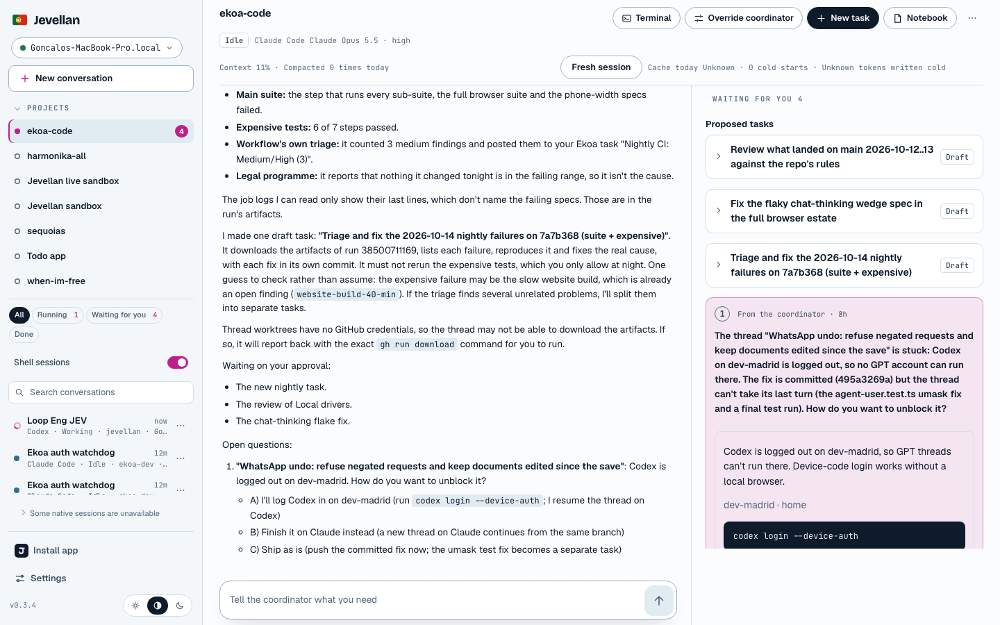
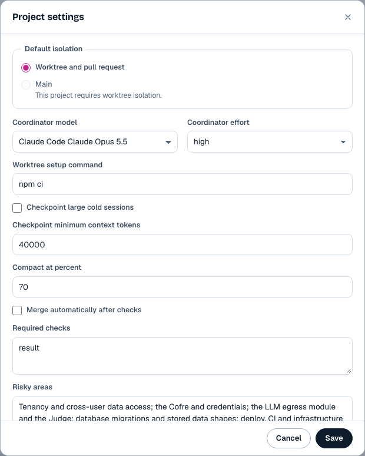
Partly — Two goal-linked tasks were created; only one thread was created, and it failed before turn 1. The review task did not start.
The exact requested instruction was sent at 11:43:19 Lisbon. The coordinator created one owner-request task under each objective and marked both Now. This proves task splitting and goal links, but not two running threads.
/Users/ggomes/.jevellan/projects/project_d65c355d-faee-4fa7-a0a0-cbe67dae3ef2/ledger/000001.jsonl
10:44:23 · event 237 · jevellan_task_create → Queued task "Make agent-user.test.ts pass under any umask" 10:44:35 · jevellan_task_create → Queued task "Review Local drivers phase 2 (575cabfa9) against the repo rules and fix what it finds"
/home/ggomes/.jevellan-member/projects/project_d65c355d-faee-4fa7-a0a0-cbe67dae3ef2/threads/thread_01M4X06SXEJPYAREQA4ND3C1A4/ledger/000001.jsonl
10:44:25.894 · preparing 10:44:26.121 · This step failed: The hub returned an invalid response. 10:44:26.129 · idle; turns: 0; cwd: empty
The task creation succeeded, but this is not a pass for two running threads. No manual model/account override or internal task-start call was used to rescue it.
The first startup failure was recorded within about one minute of task creation. At the 30-minute observation limit, there was still no second thread. The later documentary snapshot at 11:13:43 UTC shows the same state; it is not a retry or an extension for success.
T1-request.json T1-goals-and-accounts.json T1-member.json T1-coordinator-replies.json T1-cutoff.json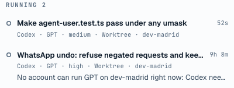
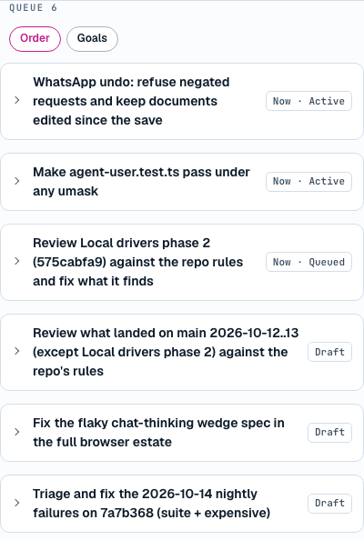
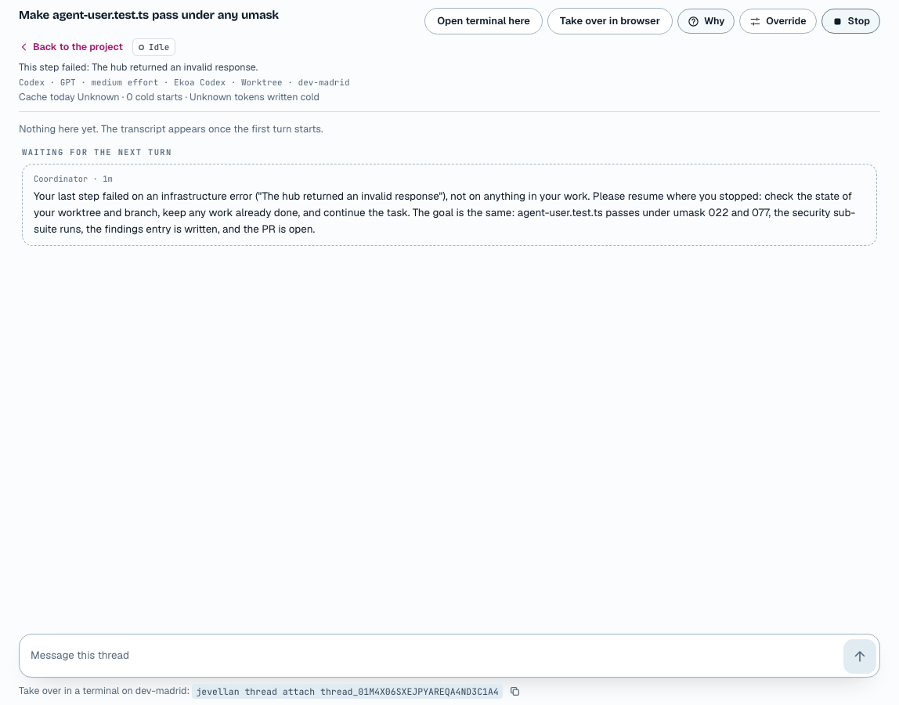
Partly — The coordinator reports the real zero-turn/queued states, but gives a stale logout as the sole cause.
At 11:53:37, about ten minutes after T1, the exact status question was sent. The answer matches the task and thread states captured at that moment. Its diagnosis goes beyond that evidence: it says Codex logout is the one blocker even though Settings and the stored account status say Ready on Madrid.
Projects UI answer, 11:54 Lisbon
"Make agent-user.test.ts pass under any umask": Idle, 0 turns taken; 0%. "Review Local drivers phase 2 ...": Queued, not started; 0%. "The one blocker is the Codex logout on dev-madrid."
/Users/ggomes/.jevellan/hub/jevellan.db · account-statuses
Ekoa Codex · dev-madrid · auth: ready weeklyPct: 15 · observedAt: 2026-10-14T10:23:22.326Z
The new thread has no session transcript. Its empty transcript and zero turns, rather than an invented progress excerpt, are the comparison evidence.
T2-request.json T2-answer.txt T2-ledger.json T2-contemporaneous.json T2-hub-at-question.json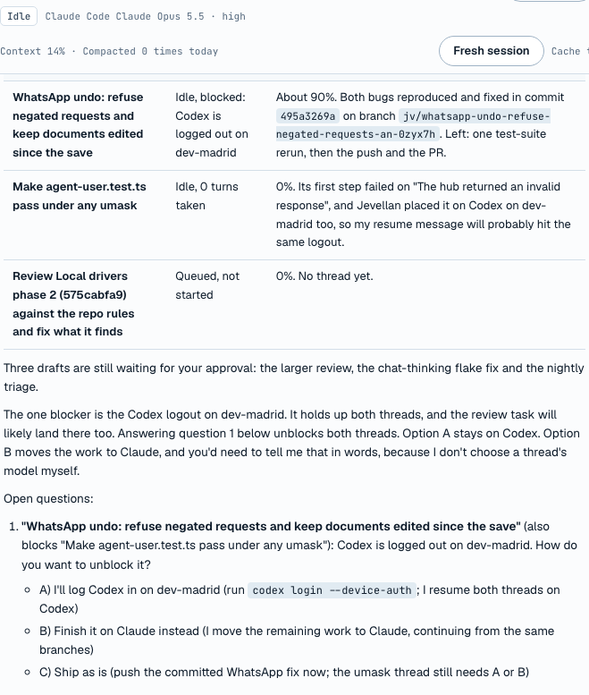
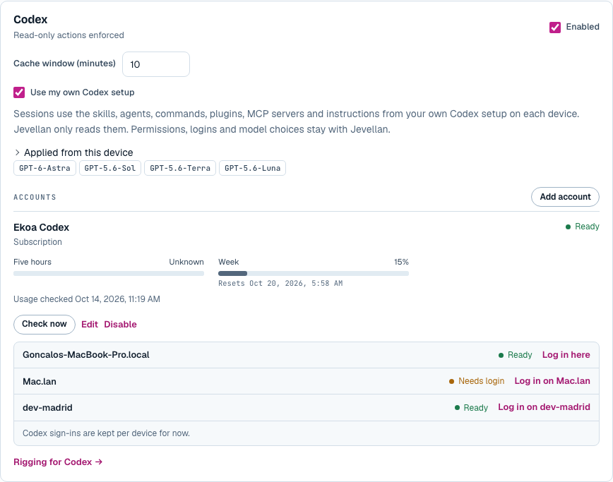
Partly — The first task has a real Jev placement; the second has no thread or placement to inspect.
The first task was placed automatically, with no manual override: Codex GPT-6-Astra, medium effort, Ekoa Codex, on Madrid. GPT-6-Astra is enabled in the configured menu and the placement’s source is Jev. No separate high-quality allowlist is evidenced here. Medium effort is reasonable for the small permission-fixture task. The record gives model/effort probabilities and device exclusions; it does not give a separate narrative account-choice rationale.
/Users/ggomes/.jevellan/projects/project_d65c355d-faee-4fa7-a0a0-cbe67dae3ef2/start-plans/treq_70cde0703c46f18a6d70d07d30c1c65698680a2d.json
source: jev; fixed: [] runtime: codex; model: gpt-6-astra effortRequested: medium; effortEffective: medium accountId: acc_test (Ekoa Codex) pick_model: GPT .78 / Opus .21 / Fable .01 effort: medium .69 / high .30 / low .01 Pro excluded: 3 GB free, needs at least 20 GB. Madrid: only eligible device. Mini: not set up for this project.
Usage available when that decision was made is preserved in the snapshot. Ekoa Codex was the only configured Codex account; its week usage was 15%, five-hour usage unknown. Claude Gmail showed 1% five-hour / 21% week, last observed 05:56 Lisbon. Claude Ekoa showed 12% / 98%, last observed the previous day, with resets already in the past. These stale observations are not fresh measurements. No account was selected or changed by the test driver.
T3-first-placement.json T3-usage.json T1-goals-and-accounts.json T3-configured-models.json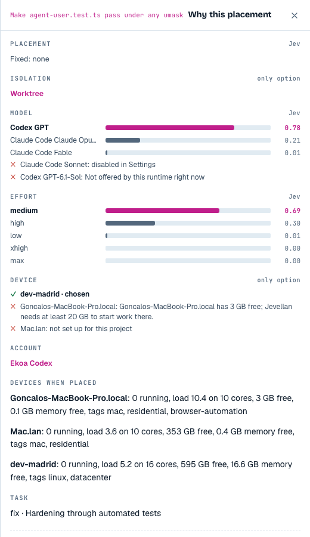
Not run — No task PR exists, so there is no diff or key change to compare.
Task versus diff: No task PR exists, so there is no diff or key change to compare.
The GitHub listing is used only to establish that these tasks have no PR. Existing repository PRs from other work are not substituted. No PR was edited or pushed by the builder.
github-before.json T1-member.jsonNot run — The thread ran zero turns; there are no build/test commands, PR body, checks or runner to evaluate.
Commands and runners: The thread ran zero turns; there are no build/test commands, PR body, checks or runner to evaluate.
The GitHub listing is used only to establish that these tasks have no PR. Existing repository PRs from other work are not substituted. No PR was edited or pushed by the builder.
Time from thread start to PR open: not measurable, because no PR opened. Runner location, narrow-test compliance and absence of self-review are unverified, not assumed from the task instructions.
github-before.json T1-member.jsonPartly — It reads GitHub and correctly reports no task PRs; failed-check handling and merge routes cannot be exercised.
The exact PR-status question was sent through coordinator chat. The ledger records jevellan_github with action pulls, and the reply says neither new task has a PR. The gh listing agrees. The reply mixes the older WhatsApp thread into “these two” and calls the requested review a third task; it also repeats the stale logout explanation.
/Users/ggomes/.jevellan/projects/project_d65c355d-faee-4fa7-a0a0-cbe67dae3ef2/ledger/000001.jsonl
coordinator tools: jevellan_thread_list; jevellan_github { action: pulls, state: open }
Reply: "Neither thread has a PR yet."
Review task: "still queued with no thread, so it has no PR either."No PR checks finished for these tasks, no checks-failed event exists for them, and no green PR reached the merge gate. The requested “tests needed or not” routes are therefore not run, rather than inferred from another PR. Automatic merges stay off.
The reply says 10 open PRs; the gh output lists 11. Its limited lookup is not an accurate total. Both agree that the requested tasks have no PR.
T6-request.json T6-answer.txt T6-ledger.json T6-github-today.json T6-github-open.json github-captures.json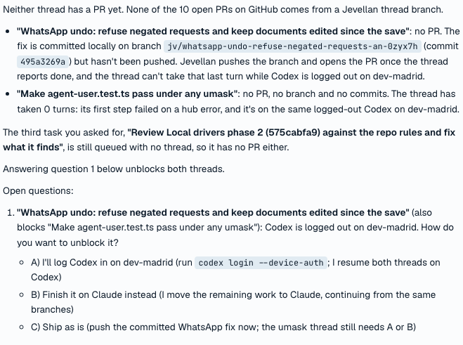
Not run — There are no two PRs to review. Correctness, scope, tests and readability are unscored, rather than assigning fabricated 1–5 ratings.
Quality scores: There are no two PRs to review. Correctness, scope, tests and readability are unscored, rather than assigning fabricated 1–5 ratings.
The GitHub listing is used only to establish that these tasks have no PR. Existing repository PRs from other work are not substituted. No PR was edited or pushed by the builder.
| Criterion | Test-hardening PR | Code-review PR |
|---|---|---|
| Correctness | Not run — no PR | Not run — no PR |
| Scope | Not run — no PR | Not run — no PR |
| Tests | Not run — no PR | Not run — no PR |
| Readability | Not run — no PR | Not run — no PR |
No real PR bug can be listed from these tasks because neither produced a diff. This is not a clean review verdict.
github-before.json T1-member.jsonNot run — The required idle period after both tasks finish cannot begin: the tasks never finished.
Automatic goal refill is present and enabled, but this test requires both requested tasks to finish first. Existing drafts from before the run do not count as new suggestions. No refill was triggered manually and no draft was approved to manufacture the prerequisite.
An additional passive observation of 15 minutes 20 seconds, from 11:00:36 to 11:15:57 UTC, produced no new draft. The same three old drafts remain. Because the two work items never finished, this does not prove or disprove refill after completion; it is not labelled “Not present”.
T1-created.json T8-observation-start.json T8-observation-end.json final-state.json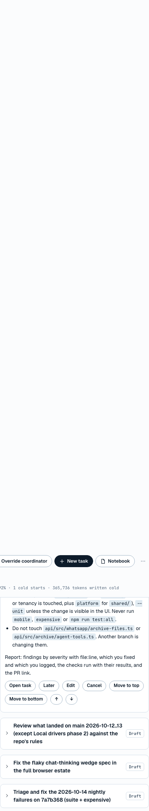
Partly — Coordinator cache receipts and cold classification work; thread measurements and a calibrated cache window are not established.
Consecutive coordinator turns are recorded below exactly as the runtime reports them. They show high reads, but the write counters are large; this does not establish low per-turn writes or billing savings. The new thread has no turn records. Turn 14 is marked startedCold after 235.533 seconds with T10’s temporary one-minute cache window.
| Turn | Idle seconds | Cache read | Cache write | Uncached input | Hit ratio | Started cold | Window minutes |
|---|---|---|---|---|---|---|---|
| 10 | — | 3,499,116 | 346,027 | 1,107 | 91.0% | no | 60 |
| 11 | 1.58 | 3,753,298 | 347,429 | 1,111 | 91.5% | no | 60 |
| 12 | 479.184 | 4,010,039 | 362,571 | 1,115 | 91.7% | no | 60 |
| 13 | 37.432 | 4,297,731 | 365,130 | 1,119 | 92.1% | no | 60 |
| 14 | 235.533 | 4,443,435 | 365,736 | 1,121 | 92.4% | yes | 1 |
| 15 | 32.539 | 4,736,499 | 368,687 | 1,125 | 92.8% | no | 60 |
| New test thread | No turn | — | — | — | Unknown | — | 10 |
The cold flag describes the configured idle threshold. It does not independently prove that the provider’s cache expired.
| Idle minutes | Claude hit ratio | Codex hit ratio |
|---|---|---|
| 3 | 38.73% | Startup failed / missing |
| 15 | 38.33% | 58.4% |
| 55 | 38.33% | 18.8% |
| 70 | 3.21% | Startup failed / missing |
L1 ran earlier today, from 07:17 to 08:27 UTC, on source b22c5fc6. All six recorded follow-ups are below the required 80% ratio; two Codex follow-ups are missing. No supported cache window was measured. Claude 60 / Codex 10 minutes remain provisional, not measured defaults. The earlier result is not rerun or counted as a pass here.
T9-cache-records.json T9-historical-L1.json T10-outcome.json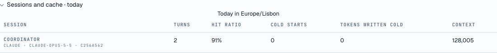
Doesn't work — The word is recalled, but no checkpoint or digest restart happens; the enabled setting remains off.
The exact remember instruction was sent, then Claude’s cache window was set to 1 minute and the project minimum to 20,000 tokens through Settings. After 199.7 seconds, the exact recall question was sent. It answered “anchor-blue”. Both values were then restored and verified.
/Users/ggomes/.jevellan/projects/project_d65c355d-faee-4fa7-a0a0-cbe67dae3ef2/ledger/000001.jsonl
turn 14: fresh=false idleSeconds=235.533; contextTokensBefore=145706; cacheWindowMinutes=1 startedCold=true session-checkpointed events since test start: 0 before/after session: same hashed identity First prompt: Events since your last turn: [owner 11:58] What is the test word? Open questions to the owner (numbered as the owner sees them): 1. [W
There is no new digest to quote: the turn starts with the ordinary event block, not the fresh-session restart line. Checkpoints were already disabled because L2/L3 had not passed. The owner allowed only the two named settings to change, so enabled was not switched on. This result establishes the installed limitation, not a new failure in the checkpoint decision algorithm.
T10-remember-request.json T10-runtime-baseline.json T10-settings-applied.json T10-recall-request.json T10-answer.txt T10-outcome.json T10-settings-restored.json settings-restoration-check.json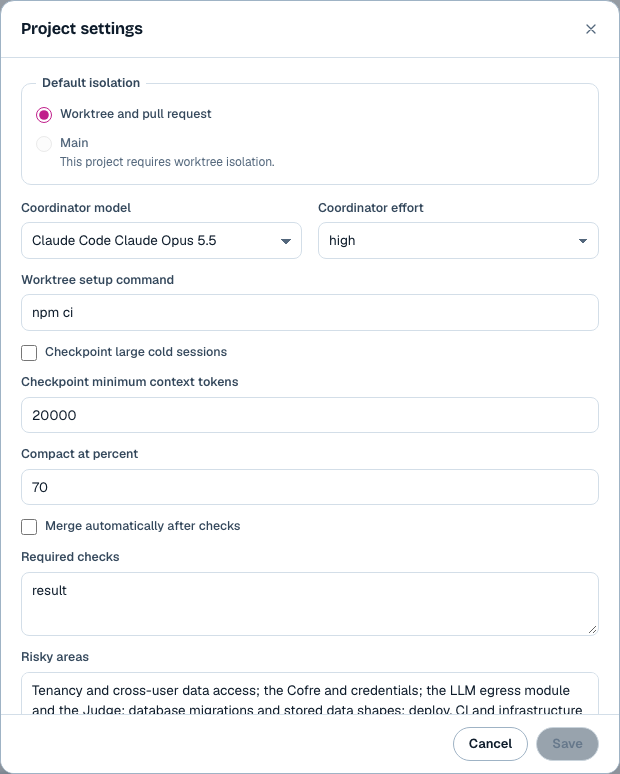
Partly — Day/night files and INDEX exist, but indexed thread files and the member mirror are missing; the question cannot reach a running session.
The hub folder was listed and its index compared with the ledger. Its day file contains T1’s owner message, and its night file contains the prior night’s results. The index links to both the old and new thread, but there is no threads directory. Madrid’s mirror is absent more than 30 seconds later.
/Users/ggomes/.jevellan/project-journal/project_d65c355d-faee-4fa7-a0a0-cbe67dae3ef2/
INDEX.md days/2026-10-13.md days/2026-10-14.md nights/2026-10-14.md No threads/*.md files.
/Users/ggomes/.jevellan/project-journal/project_d65c355d-faee-4fa7-a0a0-cbe67dae3ef2/INDEX.md
Thread "Make agent-user.test.ts pass under any umask" (codex GPT, idle) → threads/make-agent-user-test-ts-pass-under-any-umask-35755f4d480f.md The referenced file does not exist.
The exact question “What did the other thread change today?” was sent through the thread UI at 11:50:16. It remains queued; there is no answer and no journal file read in a transcript. The failure is retained without restarting the session or repairing the mirror.
At the final observation, 25 minutes after the question, the UI still shows “Waiting for the next turn” and “The hub returned an invalid response.” No command or file read ran.
T11-question.json T11-hub-journal.json T11-journal-excerpts.json T11-mirror-after-30s.json T1-member.json final-member.json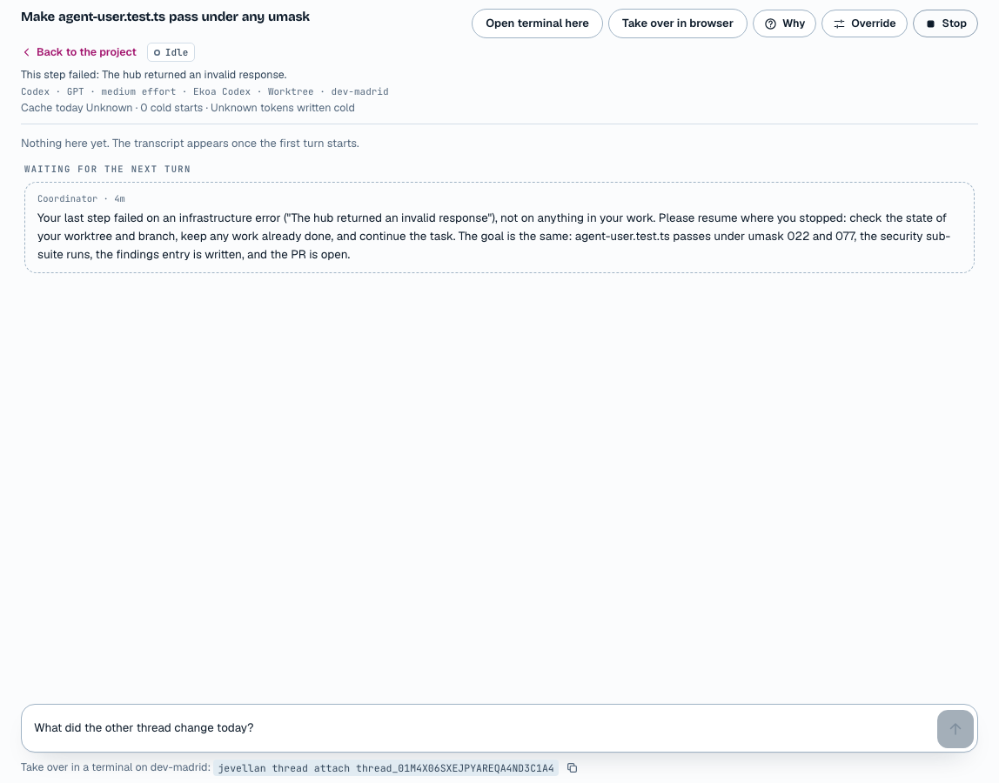
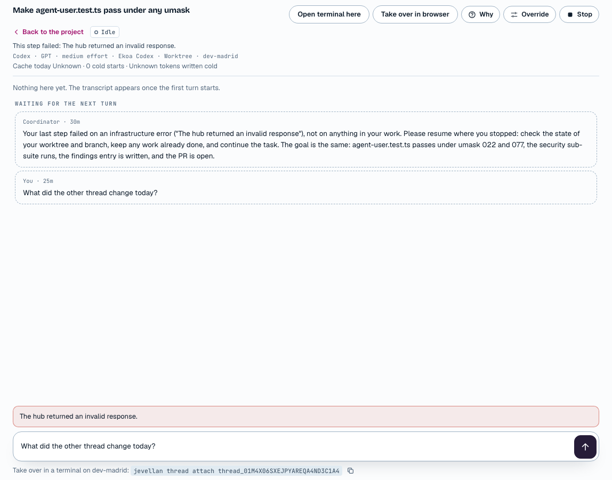
No PR was opened by either readiness task. The existing PRs were not used as substitutes for the missing test PRs, and were not changed by this run. In particular, #208 — scheduler switch is separate earlier work and remains for the owner. The final gh listing is included with the evidence.
github-before.json github-after.json| Setting or state | Before | After |
|---|---|---|
| ekoa-code autoMerge | false | false; confirmed before testing and after restoration |
| Claude cacheWindowMinutes | 60 | 1 during T10; restored to 60 |
| ekoa-code checkpointMinTokens | 40,000 | 20,000 during T10; restored to 40,000 |
| ekoa-code sessionCheckpoints.enabled | false | false; unchanged |
| Required checks | result | result; unchanged |
| Runtime/model/account choices, goals, scheduler variable and guards | Existing values | Unchanged by the test driver |
The readiness tasks and their messages remain in Jevellan as test evidence. Their PRs, if any appear after the observation ends, remain subject to the owner’s Merge button because automatic merges stay off. No Jevellan fix tasks were opened by the builder. No product files were edited after wrap-up. The Pro rollback backup and the named WIP stash remain available.